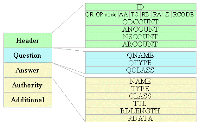

In this Post, I’d like to talk about the packet structure of DNS as well as how to implement it into python script to start asking and receiving answers about domain resolution.
TL;DR
DNS is used to map human-readable domain names (such as example.com) to machine-readable IP addresses (like 193.84.16.134). To use DNS, we send a query to a DNS server. This query contains the domain name we’re looking up. The DNS server tries to look up that domain name’s IP address in its internal data store. If it finds it, it returns it. If it can’t find it, the server will forward the query to a different DNS server, which will repeat this process until the IP is found. DNS messages are usually sent using the UDP protocol.
DNS Packet Structure
All DNS packets have this structure :

The header describes the type of packet and which fields are contained in the packet. Following the header are a number of questions, answers, authority records, and additional records. For this project, we will be ignoring the authority and additional fields, but the client program must accept packets with such fields, but must ignore them. Note that a response for a single question may contain multiple answers, such as if an address has multiple IP addresses.
DNS Headers
0 1 2 3 4 5 6 7 8 9 10 11 12 13 14 15
+--+--+--+--+--+--+--+--+--+--+--+--+--+--+--+--+
| ID |
+--+--+--+--+--+--+--+--+--+--+--+--+--+--+--+--+
|QR| Opcode |AA|TC|RD|RA| Z | RCODE |
+--+--+--+--+--+--+--+--+--+--+--+--+--+--+--+--+
| QDCOUNT |
+--+--+--+--+--+--+--+--+--+--+--+--+--+--+--+--+
| ANCOUNT |
+--+--+--+--+--+--+--+--+--+--+--+--+--+--+--+--+
| NSCOUNT |
+--+--+--+--+--+--+--+--+--+--+--+--+--+--+--+--+
| ARCOUNT |
+--+--+--+--+--+--+--+--+--+--+--+--+--+--+--+--+
ID : A 16 bit identifier that generates randomly. This identifier is the same one when it comes to reply from the DNS server. QR : A one bit field that specifies whether this message is a query (0), or a response (1). OPCODE : A four bit field that specifies what kind of query in this message :
- 0: Standard query
- 1: Inverse query
- 2: Server status request
- 3-15: Reserved for future use
AA : Authoritative Answer, this bit is only meaningful in responses, and specifies that the responding name server is an authority for the domain name in question section. TC : TrunCation, 1 bit flag specifying if the message has been truncated. Our message is short, and won’t need to be truncated, so we can set this to 0. RD : Recursion Desired, 1 bit flag specifying if recursion is desired. If the DNS server we send our request to doesn’t know the answer to our query, it can recursively ask other DNS servers. We do wish recursion to be enabled, so we will set this to 1. RA : Recursion Available, this will be is set (1) or cleared (0) in a response, and denotes whether recursive query support is available in the name server. Z : Reserved for future use, You must set this field to 0. RCODE : Response code - this 4 bit field is set as part of responses. The values have the following interpretation :
- 0: No error condition
- 1: Format error - The name server was unable to interpret the query.
- 2: Server failure - The name server was unable to process this query due to a problem with the name server.
- 3: Name Error - Meaningful only for responses from an authoritative name server, this code signifies that the domain name referenced in the query does not exist.
- 4: Not Implemented - The name server does not support the requested kind of query.
- 5: Refused - The name server refuses to perform the specified operation for policy reasons.
QDCOUNT : an unsigned 16 bit integer specifying the number of entries in the question section. You should set this field to 1, indicating you have one question. ANCOUNT : an unsigned 16 bit integer specifying the number of resource records in the answer section. You should set this field to 0, indicating you are not providing any answers. NSCOUNT : an unsigned 16 bit integer specifying the number of name server resource records in the authority records section. You should set this field to 0, and should ignore any response entries in this section. ARCOUNT : an unsigned 16 bit integer specifying the number of resource records in the additional records section. You should set this field to 0, and should ignore any response entries in this section.
DNS Questions
0 1 2 3 4 5 6 7 8 9 10 11 12 13 14 15
+--+--+--+--+--+--+--+--+--+--+--+--+--+--+--+--+
| |
| QNAME |
| |
+--+--+--+--+--+--+--+--+--+--+--+--+--+--+--+--+
| QTYPE |
+--+--+--+--+--+--+--+--+--+--+--+--+--+--+--+--+
| QCLASS |
+--+--+--+--+--+--+--+--+--+--+--+--+--+--+--+--+
QNAME : This contains the URL who’s IP address we wish to find. It is encoded as a series of ‘labels’. Each label corresponds to a section of the URL. The URL example.com contains two sections, (A) example, and (B) com. So the first byte will be the length of (A), which is 7 in our example, then we will producing a series of bytes for the full URL (exemple.com) and terminated with a zero byte. QTYPE : A two octet code which specifies the type of the query. You should use 0x0001 for this project,representing A records (host addresses). If you are completing the graduate version of this project, you will also need to use 0x000f for mail server (MX) records and 0x0002 for name servers (NS) records. QCLASS : The class we’re looking up. We’re using the the internet, IN, which has a value of 1.
DNS Answers
0 1 2 3 4 5 6 7 8 9 10 11 12 13 14 15
+--+--+--+--+--+--+--+--+--+--+--+--+--+--+--+--+
| |
| |
| NAME |
| |
+--+--+--+--+--+--+--+--+--+--+--+--+--+--+--+--+
| TYPE |
+--+--+--+--+--+--+--+--+--+--+--+--+--+--+--+--+
| CLASS |
+--+--+--+--+--+--+--+--+--+--+--+--+--+--+--+--+
| TTL |
| |
+--+--+--+--+--+--+--+--+--+--+--+--+--+--+--+--+
| RDLENGTH |
+--+--+--+--+--+--+--+--+--+--+--+--+--+--+--+--|
| RDATA |
| |
+--+--+--+--+--+--+--+--+--+--+--+--+--+--+--+--+
NAME : The domain name that was queried, in the same format as the QNAME in the questions. TYPE : Two octets containing one of the type codes. This field specifies the meaning of the data in the RDATA field. You should be prepared to interpret type 0x0001 (A) and type 0x0005 (CNAME). CLASS : Two octets which specify the class of the data in the RDATA field. You should expect 0x0001 for this project, representing Internet address. TTL : The number of seconds the results can be cached. RDLENGTH : The length of the RDATA field. RDATA : The data of the response. The format is dependent on the TYPE field: if the TYPE is 0x0001 for A records, then this is the IP address (4 octets).